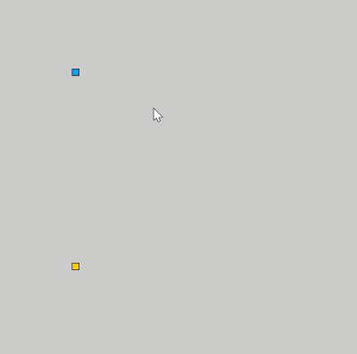

玩游戏学前端-贪吃蛇
在游戏项目中学JavaScript
WEB前端基础技术包含HTML5/CSS3/JavaScript, 当然除了基础技术前端还有框架如React,Vue等, 其中相对难一点的便是JavaScript和CSS3，CSS3学起来开心多了, JavaScript编程语言可没那么有趣，如果用它来实现游戏，我想趣味性要超越CSS3, 俗话说：兴趣是最好的老师；下面我们一步步来实现这个小游戏，在开发过程中去学习JavaScript语言和CSS3的关键技术要点。效果如下图所示

贪吃蛇游戏
1. HTML5和CSS3设计游戏界面
HTML页面组成，常用标签和meta
准确使用HTML标签div, 标签中的基本属性
为HTML标签添加样式
CSS3样式编写，标签选择器，ID选择器，类选择器
CSS3中的常用单位 px,rpx,em,rem,vh,vw,vmin,vmax
CSS3边框和颜色
CSS3 Grid网格布局
2. HTML与Javascript
- ES5和ES6的基本认知
- 在HTML中添加Javascript脚本支持
- Javascript语言基础: 变量、程序逻辑、函数、对象
- Javascript的模块化
3. Javascript操作HTML元素 - DOM
- 使用Javascript选择HTML元素
- Javascript动画
- Javascript创建HTML元素
- Javascript设置HTML元素样式
- Javascript定义游戏核心逻辑
4. 绘制Snake
Javascript数组和DOM操作
创建Snake Head，定义速度常量
移动Snake Head
使用Javascript事件控制Snake方向
创建Snake Body并绘制蛇的身体
6. 绘制Food
Javascript数组和DOM操作
使用Javascript DOM创建Food
Javascript创建随机数
根据随机数位置显示Food
7. Snake和Food
- Snake吃Food，Snake增长逻辑
7. 游戏结束
- Snake移动范围边界判断
- 游戏结束判断